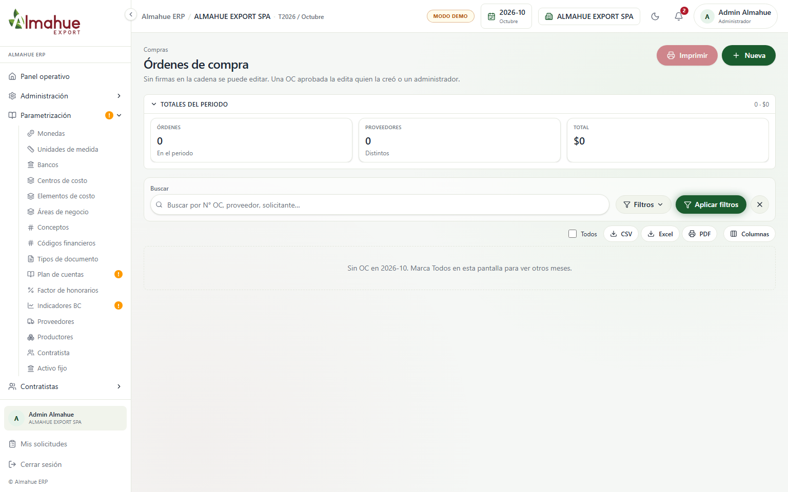
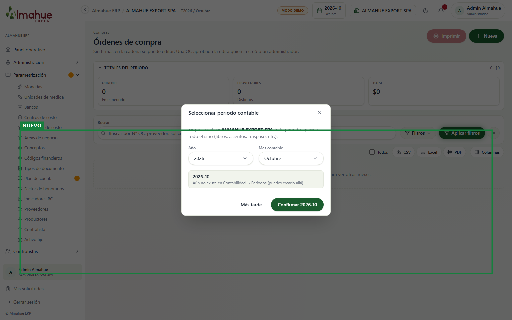
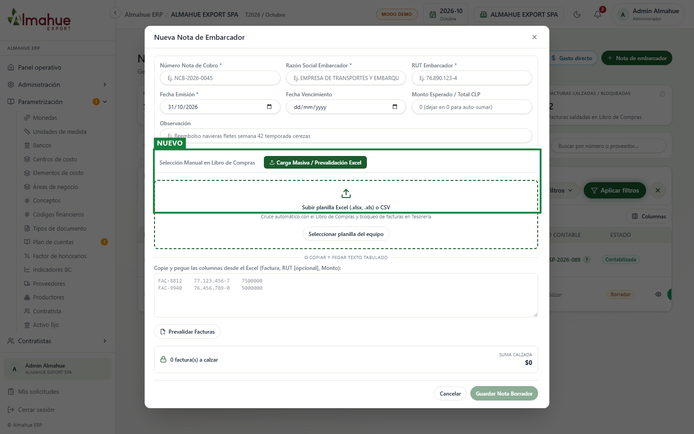
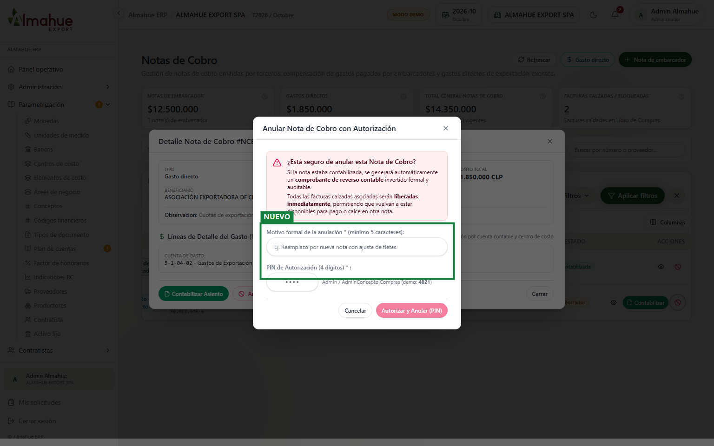
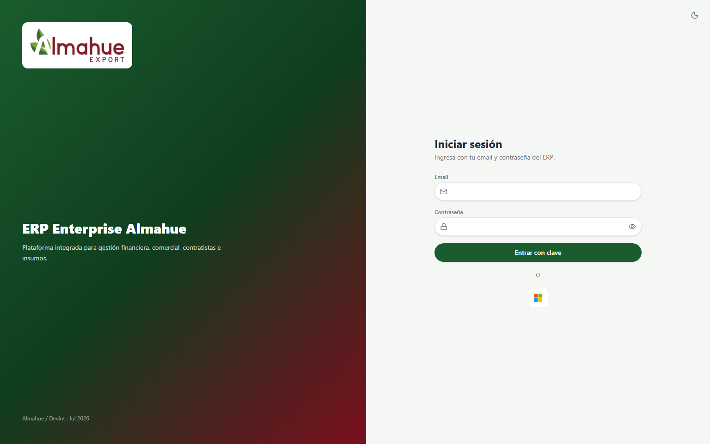
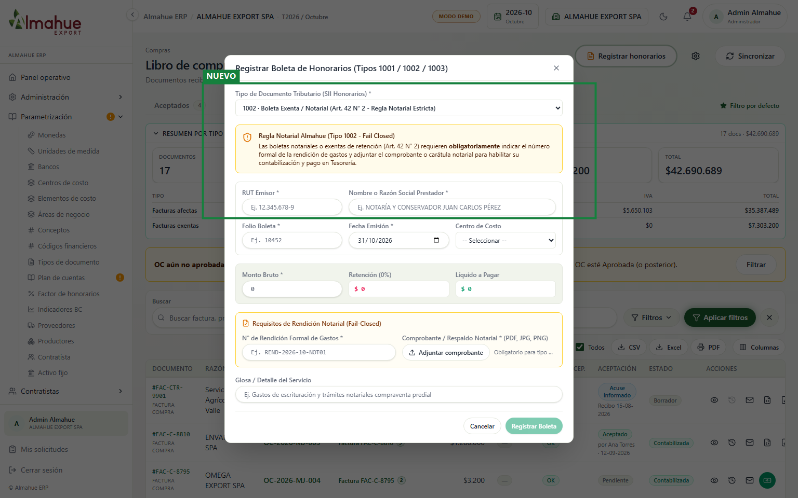

Módulo 2: Compras, Proveedores y Notas de Cobro - Antes y después
Empresa ALMAHUE EXPORT SPA, ambiente local de desarrollo y periodo activo. El recuadro verde y la etiqueta NUEVO están colocados sobre las capturas para destacar las nuevas funcionalidades. Un clic abre la imagen en el visor. La rueda o las teclas + y - controlan el zoom. Flechas izquierda y derecha alternan entre el antes y el después. Esc cierra el visor.
1. Órdenes de compra: Detalle con Desglose Jerárquico Contable en Árbol (Item 2.4 / C-4)
Antes

Después

Qué cambió: Se incorporó el componente interactivo de árbol contable de cuatro niveles (Cuenta Contable > Centro de Costo > Elemento de Gasto > Líneas de Detalle) con cálculo ponderado de porcentajes respecto al total neto de la OC, junto con controles de expansión y colapso global. Qué no se apretó: No se ejecutó edición ni cierre de la orden de compra consultada.
2. Notas de cobro: Carga Masiva y Prevalidación de Planilla Excel / CSV para Embarcadores (Item 2.7 / P-7)
AntesDespués

Qué cambió: Se habilitó la zona de carga de planillas Excel (.xlsx, .xls) y CSV con procesamiento en backend vía Multer y XLSX, prevalidando automáticamente contra las facturas del Libro de Compras y bloqueando su pago duplicado en Tesorería. Qué no se apretó: No se pulsó el botón Guardar para no crear registros definitivos en la base de datos durante la prueba visual.
3. Notas de cobro: Flujo de Anulación Autorizada con PIN y Generación de Reverso Contable (Item 2.8)
AntesDespués

Qué cambió: Se implementó la autorización obligatoria con PIN de 4 dígitos (Admin o AdminConcepto Compras) y motivo formal mínimo de 5 caracteres. Al anular, el backend invoca el generador de comprobantes de reverso contable invertido formal y libera de inmediato las facturas calzadas. Qué no se apretó: No se ingresó el PIN de confirmación para conservar intacto el estado de las notas de cobro activas.
4. Libro de compras: Registro de Boletas de Honorarios y Regla Notarial Estricta (Item 2.10 / P-5)
Antes

Después

Qué cambió: Se añadió el botón 'Registrar honorarios' en la barra principal del Libro de Compras y el modal de registro con soporte para tipos de DTE 1001, 1002 y 1003. Para el tipo 1002 (exenta notarial), se aplica la regla restrictiva fail-closed que exige número formal de rendición de gastos y archivo adjunto de respaldo de pago notarial. Qué no se apretó: No se envió el formulario para no emitir boletas ficticias en el libro.
Flechas izquierda / derecha: alternar antes y después. Teclas + y - : zoom. Esc cierra.